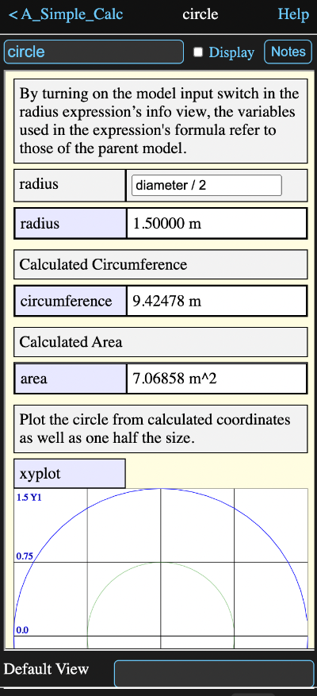

A model is simply a container for other tools. These are displayed as icons on the model's diagram view.
Every Math Minion session has one root model, but it can contain other models, which in turn can also contain models and so forth.
Tapping on the icon for a model in the diagram will switch the diagram and information view to that of the child model.
You can return to the parent model by tapping the back button at the upper left of the diagram or model information view.
The name space of the model is completely independent of that of the parent model or any other model. This means that models can contain tools with the same names as tools in other models.
An input expression operates in the namespace of the parent model, but its result is available in its containing model. This means the formula entered into an input expression can only reference tools in the parent, but its result can be used by other tools in its own model.
An expression is set to be an input by checking the Model Input check box on an expression's information view.
The result of any expression or other tool in a child model can be accessed by formulas in the parent model by appending a dot and its name to its model name. Thus if an expression called "result" was in a model called "calc", then a formula in a tool in the model containing "calc" could reference "result" as:
calc.result
The information view for the circle model from the Getting Started session looks like this (after scrolling by the included overview):
If none of the tools in the model have any display boxes checked, then the information view will just display a list of the tools in the model. However as you add tools to the model, any that have their display box checked will appear in the model's information view instead.
In a tool's notes view, you can also set that the notes should appear above its display in the model view.
An expression can also be told to include an input field in the model view, where it's value can be directly set.
In the view above, all three have been set for the radius expression, so the note appears, followed by an input field and then the result of evaluating the input.
Below that, just the results of the circumference and area calculations are shown, and below those are the notes and plot of the xyplot tool.
In this way you can create simple forms, reports or summaries for the calculations performed by a model.
In all cases tapping on a tool name, will show that tool's information view and select its icon on the diagram. If the selected tool is a model the diagram will switch to showing that model. You can use the back button at the top left to return to the original model information view.
The order that tools are displayed is determined by their horizontal position on the model diagram, with ties being determined by the vertical position.
It is possible to set a specific tool in the model to always be displayed in the information view when the model is first opened. Enter the name of this tool in the Default View input field at the bottom of the information view.
Empty the field 1f you wish to return to having the model information displayed when the model is first opened,
Parameters can be accessed with the form a.b where a is the model and b is the parameter
All tools contained in the model are available as formula parameters and that tool's parameters will be available by extending the dot notation. For instance, in the example above, a tool in the A_Simple_Calc model could use the formula
circle.xyplot.x
to retrieve an array of the x coordinate values from the xyplot graph in the circle model.
The following will match only if the model does not contain a tool with a matching name.